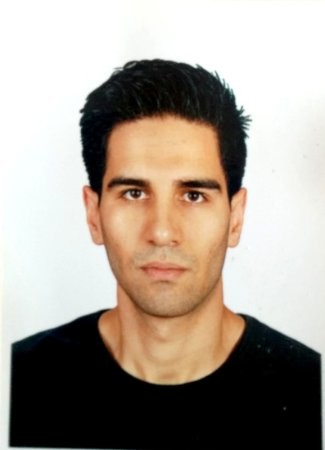

Tugkan's Personal Site
|  |
Tugkan Kocak |
|
| Electrical Engineer || Electrical storage systems and their conversion || Regenerative Braking || Application Manager|| Python |
|
Education
- Electrical Engineering , BA, Warsaw University of Technology, Warsaw/Poland
Experience
- Electrical Engineering, Designer | Sep 2017 - Present, TugTec(Self-employed), Warsaw/Poland
- Re-designing, building the old motocykles and their energy storage system
- Building new electrification system, BMS units for the Li-On bateries and their conversion
- Application Manager(Cloud base) | Sep 2019 - Present, Falck Healthcare, Warsaw/Poland
- Developing complex business workflow solutions using Decisions Workflow -Manage data model, relationships, orchestrations, C#, JSON, SQL
- Testing the changes before commitment(CD/CI)
- Producing workflows and systems by meeting with stakeholders to elicit requirements, leading the technical design, and providing hands-on development of the solutions.
- Communicating with technical and non-technical individuals and teams
- (providing options with pros, cons and risks) while providing thought leadership to sponsors/stakeholders in solving business process and/or technical problems(CD/CI)
- Testing and manipulating the data(MS SQL) regarding to business requirements
- ITIL certified
- Providing support to the client which operates in Copenhagen and visiting there each month
- Writing the technical documentations for the analysts for both testing and diagnosing the issues
- Providing required trainings for the Software Engineers
- Application Support Specialist | Oct 2017 - Sep 2019, Diebold Nixdorf, Warsaw/Poland
- Resolving the IT issues, recorded by L1 Agents or by automatic monitoring system.
- Troubleshooting and resolving either hardware and software issues with or without provided tool-set
- Management of certain databases using Microsoft SQL Server
- Usage of RDP/VNC connection for troubleshooting and fixing purposes
- Technical network support : VLAN, DHCP, DNS
- Working on ETL and Data Warehousing to monitor our log files and to reach them.
- Monitoring whole installations, providing technical support for any hardware and software, installation of UPS, Bore scanners, backoffice PCs, Timeclock, Printers
- IT Helpdesk | Oct 2016 - Oct 2017, Diebold Nixdorf, Warsaw/Poland
- Filters Help Desk calls and provides basic support and troubleshooting.
- Analysing client’s problems
- Coordinating field services visit with customers.
- Taking care to maintain high quality of service
Skills
| Python |
⭐⭐⭐⭐⭐ |
MySQL |
⭐⭐⭐⭐⭐ |
Solar Energy |
⭐⭐⭐⭐⭐ |
Regenerative Braking |
⭐⭐⭐⭐⭐ |
DC to DC, Ac to DC conversion |
⭐⭐⭐⭐⭐ |
Renewable energy |
⭐⭐⭐⭐⭐ |
| English |
⭐⭐⭐⭐⭐ |
Turkish |
⭐⭐⭐⭐⭐ |
Computer: Python,
SQL, MS Office
Language: English(Fluent),
Turkish(Native)